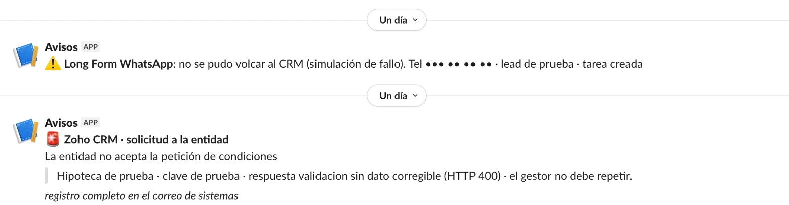

Proyecto 12 · Avisos de fallosTodos los proyectos
Cuando algo falla, el equipo se entera al momento y sabe qué hacer.
Las automatizaciones fallan de vez en cuando. Cada fallo llega al canal del equipo con lo que ha pasado y con el paso para arreglarlo.
Un proceso de cada día
Firma de un documentoCuatro pasos automáticos
Llega el documento firmadoHecho
Se descargaHa falladoHecho
Se guarda en la fichaHecho
Se avisa al clienteHecho
Lo que ve el equipo
Canal de avisosLo ve todo el equipo
Todo en orden.
Firma de documentos
No se pudo descargar el documento firmado
Solicitud 0001. Se queda en «Pendiente de firma».
Qué hacer: reprocesar.
ReprocesarRepetirlo no duplica nada. Lo ya hecho no se vuelve a hacer.
La herramienta real


Qué cambia
Antes, nadie se enteraba de los fallos. Ahora cada fallo llega al canal del equipo con lo necesario para arreglarlo.
- Todos los avisos tienen el mismo formato.
- Cada aviso dice qué ha fallado y qué hacer.
- Hay una guía para que otra persona lo resuelva sin depender de mí.
Qué hice yo
- Hice que todos los procesos importantes avisen de la misma manera cuando fallan.
- Llevé al canal del equipo los fallos de la herramienta de automatización, que antes no llegaban.
- Escribí una guía para que otra persona pueda entender un aviso y resolverlo.
Hecho conZoho CRM · Make · Google Apps Script · Slack